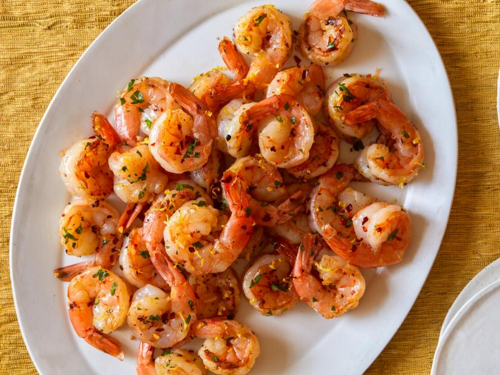

Short Yet Spicy Garlic Shrimp
Description:
Very Short And spicy and tasty shrimp. :)
Ingredients:
- 2 tablespoons extra virgin olive oil, 2 turns of the pan
- 4 cloves garlic, crushed away from skin
- 1/2 teaspoon crushed red pepper flakes
- 24 jumbo shrimp, peeled and deveined, tails in tact, ask for easy peels at your fish counter
- 2 teaspoons grill or steak seasoning blend (recommended: Montreal Seasoning by McCormick) or coarse salt and pepper
- 1 lemon, zested and juiced
- 2 tablespoons chopped parsley leaves, a handful
Steps:
- Heat a large skillet over medium high heat. Add extra-virgin olive oil, 2 turns of the pan, garlic, red pepper flakes and shrimp. Season with grill seasoning or salt and pepper and cook shrimp 3 minutes or until just pink. Toss with lemon zest, juice and chopped parsley. Remove shrimp to a serving platter leaving the garlic cloves in the pan.